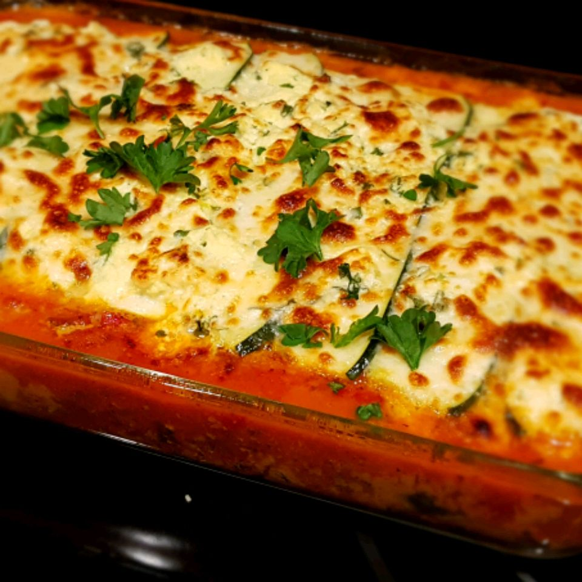

No-Noodle Zucchini Lasagna

Zucchini lasagna after baking
Whether you're on a low-carb diet or you're Garfield trying to squeeze into that new cat bed, this noodle-free dish just might be right for you.
Ingredients
- Zucchini
- Seasonings
- Beef
- Fresh Produce
- Frozen Spinach
- Tomato Products
- Wine
- Cheese
- Egg
Steps
- Slice, salt, and drain the zucchini.
- Make the meat sauce.
- Make the tomato sauce.
- Make the ricotta mixture.
- Assemble the zucchini lasagna according to the detailed instructions in the recipe.
- Bake according to the recipe.